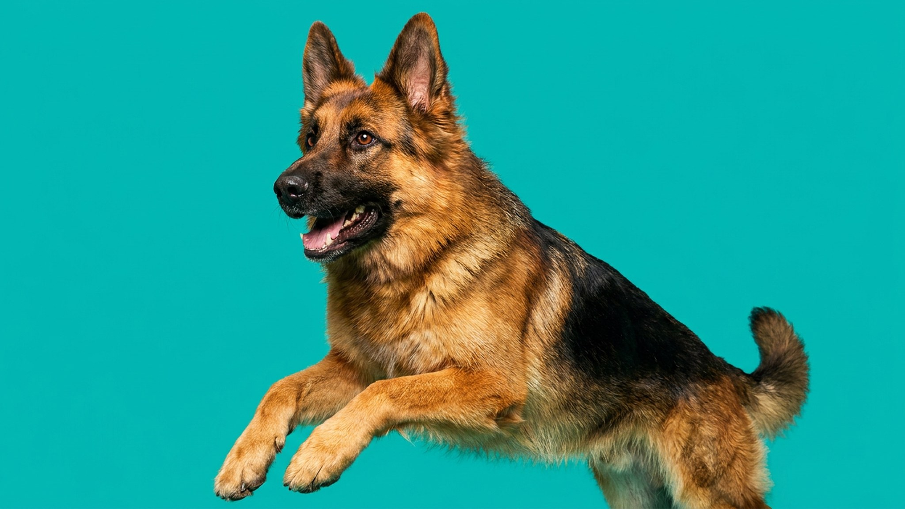

Час прогулки утром и час вечером — для малинуа это разминка, а не нагрузка. Бельгийская овчарка малинуа создавалась для непрерывной работы: пастьба, охрана, служба, спорт. Переключить этот режим на «просто активную домашнюю собаку» не получится. Ниже — почему, что происходит без нагрузки и кому порода подходит реально, а не в теории.
🐾 Питомец ведёт себя странно?
AnimaLife расшифрует поведение кошки и собаки и подскажет, что делать. Попробуйте бесплатно прямо в мессенджере.
Малинуа — не порода с «высокой энергией». Это рабочая машина с генетически закреплённой потребностью в задаче. Порода веками отбиралась на способность работать без устали и без пауз: пасти, охранять периметр, задерживать нарушителей. Физическая нагрузка для малинуа — не выход энергии, а топливо для следующего витка активности. Собака, которую «нагуляли», возвращается домой и начинает искать задачу самостоятельно.
Малинуа нужны не просто движение, а умственная работа и чёткая роль: команды, нюх-работа, апортировка, аджилити, защитный спорт (IPO/IGP), поисковые задачи. Без этого порода не «отдыхает» — она ищет, чем себя занять.
Среднестатистический малинуа требует минимум 2–3 часов осмысленной активности ежедневно. Не прогулки в парке, а именно работы: следовой, поисковой, спортивной. Хозяин для малинуа — это не просто источник еды и тепла, а напарник по задаче. Если напарник пассивен, собака берёт инициативу в свои лапы.
Малинуа без задач — это не скучная собака. Это деструктив, тревога и проблемное поведение, которые нарастают с каждым днём:
Эти проблемы не решаются «двумя прогулками в день». Они исчезают только тогда, когда собака получает то, для чего создана: задачу и результат.
Эта порода создана для людей с конкретным образом жизни и готовностью вкладываться:
Малинуа — не порода «повышенной сложности». Это порода для конкретной роли. В правильных руках это партнёр исключительной преданности и работоспособности. В неподходящих — источник ежедневного стресса для обоих.
Если вы хотите активную собаку для совместного бега и походов — обратите внимание на бордер-колли, австралийскую овчарку, выжлу или веймаранера. Они тоже требуют нагрузки, но их «выключить» гораздо проще. Малинуа же не переключается в режим домашнего питомца — он всегда на дежурстве.
🐾 Здоровье питомца под контролем
AI-ветеринар, дневник здоровья и персональные советы для вашего питомца — установите AnimaLife бесплатно.
🐾 Понравился разбор?
Подпишитесь на канал — каждый день разбираем по одному тревожному симптому у кошек и собак: что в пределах нормы, а когда пора к врачу. Подпишитесь, чтобы не пропустить разбор, который может спасти здоровье вашего питомца.
Материал носит информационный характер и не заменяет очную консультацию ветеринара.